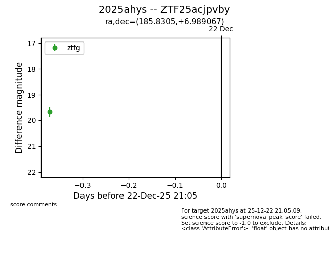
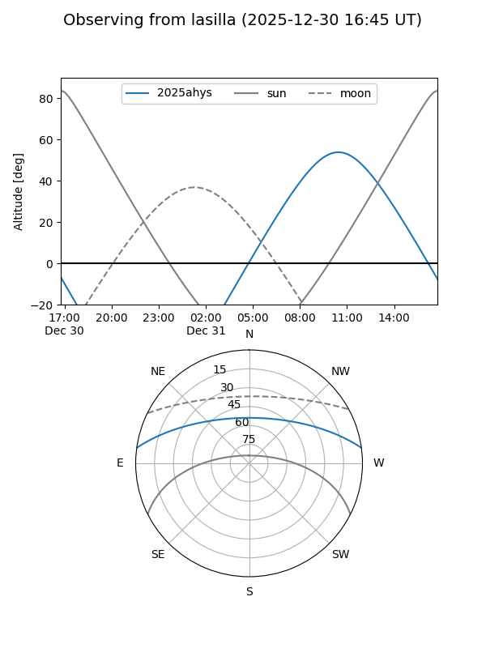
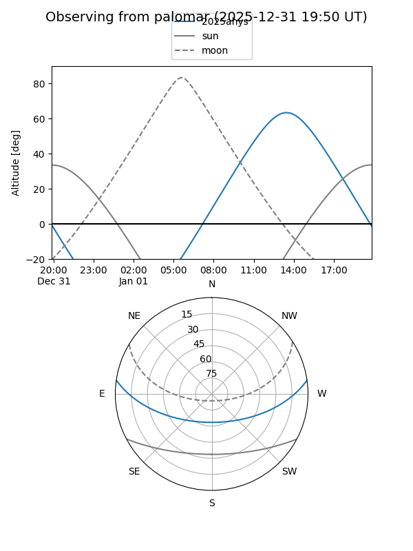
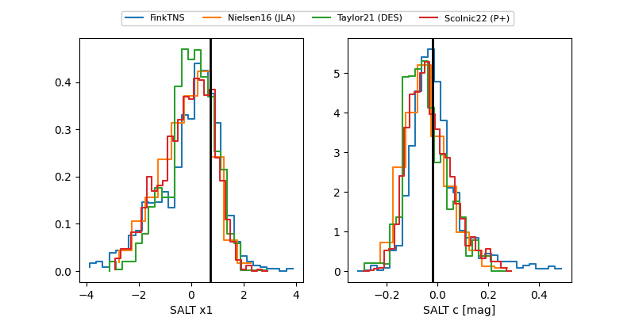

2025ahys
Target 2025ahys at 2025-12-22 21:06
Aliases and brokers:
FINK: fink-portal.org/ZTF25acjpvby
Lasair: lasair-ztf.lsst.ac.uk/objects/ZTF25acjpvby
ALeRCE: alerce.online/object/ZTF25acjpvby
TNS: wis-tns.org/object/2025ahys
YSE: ziggy.ucolick.org/yse/transient_detail/2025ahys
alt names
ZTF25acjpvby (ztf,fink_ztf)
2025ahys (tns,yse)
Coordinates:
equatorial (ra, dec) = 185.8305,+6.98907
equatorial (HMS+DMS) = 12:23:19.31,+06:59:20.64
galactic (l, b) = (283.3209,+68.78353)
Flags:
Photometry:
last ztfg=19.67
1 ztfg detections
Lightcurve

Visibility


Additional plots
